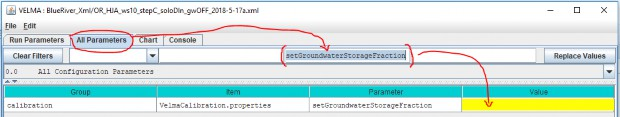

E.6 | Groundwater Storage Mechanism
Overview (Tutorial E.6_Groundwater Storage Box)
This document describes how to configure VELMA's groundwater storage mechanism, an optional method for simulating vertical drainage of excess (over saturation) water to a pool of deep groundwater. Drainage to groundwater only occurs when all the layers (1-4) in a cell's soil column are fully saturated.
When the groundwater storage mechanism is not invoked - for example when bedrock or other impermeable layer is present below layer 4 - no drainage to deep groundwater occurs and VELMA simulates upwelling of water within the saturated soil column to the surface.
The VELMA simulator can handle over-saturation water amounts in two ways
Due to its original model design, and by its default implementation, the VELMA Simulator behaves as if there is an impermeable bedrock layer underlying the bottom layer of each cell's soil column.
When all the layers in a cell's column are fully saturated, any additional water input on a given day "rebounds" up the water column to the surface of the cell, and - if the soil layer column is completely saturated -- becomes standing (i.e. surface) water for the cell.
However, the VELMA simulator also provides an alternate mechanism - the groundwater "storage box" - for handling water amounts over the fully-saturated amount a cell's soil column can contain.
When the groundwater storage mechanism is enabled (as part of a simulation's configuration) a specified fraction [0.0 to 1.0] of the excess water that reaches the bottom of a saturated soil column is removed from the column and accounted for in a single "storage box" amount accumulator. The remaining excess water "rebounds" up the soil column. The fraction of the excess water transferred to the 'storage box" is, in effect, removed from the watershed's water dynamics.
The amount of water transferred to the groundwater storage box is tracked and reported, but is not spatially explicit, and is not returnable to the watershed after it is transferred to the "box".
In effect, water in the storage box has been removed from the simulation system.
However, the fraction that the determines the amount of water transferred may be either global or spatially explicit. I.e. different groundwater fractions may be specified for each cell in the watershed.
In testing, enabling the groundwater storage mechanism has the general effects of reducing watershed total runoff, and "dampening" the reactivity of the day-to-day runoff relative to water input (precipitation, snow melt, etc.).
Enabling the Groundwater Storage Mechanism
The groundwater storage mechanism is enabled/disabled by the setGroundwaterStorageFraction parameter's value, which also specifies the global fraction or map of cell-specific fractions the mechanism employs.
The following table indicates the three types of values the parameter accepts:
| Value of setGroundwaterStorageFraction | Groundwater Mechanism Status and Behavior |
|---|---|
| Empty/blank | Inactivep No groundwater storage occurs. |
| Single numeric value in range [0, 1] | Activep Specified value is fraction used for every cell's groundwater calculation. |
| Filename of an .asc map containing values, each in range [0, 1] | Activep Specified map's values provide cell-specific fractions for groundwater calculations. |
To find and set the setGroundwaterStorageFraction parameter in JVelma:
- Click the "All Parameters" tab.
- Type the (case-sensitive) text setGroundwaterStorageFraction into the middle text- entry filter field.
- Double-click the "Value" field of the setGroundwaterStorageFraction parameter row, and enter a value.

To disable the groundwater storage mechanism set the setGroundwaterStorageFraction
paremeter's value to empty/blank.
(Note: The value 0.0 has the same effect, but use empty/blank, because this clearly signals "disable the groundwater mechanism" to the VELMA simulator.)
Water "Lost" to the Groundwater Storage Box is Reported in Simulation Results
When the enableGroundwaterStorageBox parameter is set to true, over-saturation water amounts are transferred to the storage box, and are effectively removed from the watershed. (Currently, there is no mechanism for reintroducing water transferred to the storage box back into the simulation.)
The VELMA simulator reports the groundwater storage amount in the following results:
- In the simulation runtime log file. Usually named GlobalStateLog.txt (unless user-configured for a different name), the runtime log contains an entry reporting the total amount of water (in mm) transferred to (and thus accumulated in) the groundwater storage box over the course of the entire simulation. Here is an example of the output: INFO 12:02:39 VelmaSimulatorEngine: Groundwater Storage true : storage amount=4.203496685912282E8
- In the DailyResults.csv file. Simulation runs with enableGroundwaterStorageBox == true write the per-day amount of water to a column named Groundwater_Storage_Addition(mm/day). The amount is not an averaged-per-cell; it is the total amount of water in the storage box. To determine the addition (as opposed to the total) amount of water added to the storage box on a given day, subtract the given day's amount from the prior day's amount.
- In Cell Data Writer .csv results files. If a groundwater storage-enabled simulation run also has one or more Cell Data Writers configured, each Cell Data Writer's results file will contain a column named Groundwater_Storage_Addition. This column reports (in mm) the amount of water transferred from to cell to groundwater storage, per day. The values are not cumulative. To determine the cumulative amount over a span of days, sum the amounts in this data column for the days in question.